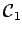
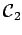
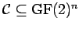

Inhalt Index DeskTop Bronstein

 Algebra und Diskrete Mathematik Elementare Zahlentheorie Codierungen Fehlerkorrigierende Codes
Algebra und Diskrete Mathematik Elementare Zahlentheorie Codierungen Fehlerkorrigierende Codes


Die Menge aller Codewörter nennt man einen Code  . Der Abstand zweier Codewörter ist die Anzahl der Stellen, in denen sich diese Codewörter unterscheiden. Der Minimalabstand des Codes ist der kleinste Abstand, der zwischen zwei Codewörtern von
. Der Abstand zweier Codewörter ist die Anzahl der Stellen, in denen sich diese Codewörter unterscheiden. Der Minimalabstand des Codes ist der kleinste Abstand, der zwischen zwei Codewörtern von  vorkommt.
vorkommt.
| Beispiel |
|
Für gilt . |
Kennt man den Minimalabstand  eines Codes
eines Codes  , dann kann man leicht ablesen, wie viele Übertragungsfehler korrigierbar sind. Codes, die t Fehler korrigieren, werden t-fehlerkorrigierend genannt.
, dann kann man leicht ablesen, wie viele Übertragungsfehler korrigierbar sind. Codes, die t Fehler korrigieren, werden t-fehlerkorrigierend genannt.
Ein Code  ist t-fehlerkorrigierend genau dann, wenn gilt.
ist t-fehlerkorrigierend genau dann, wenn gilt.
| Beispiel Fortsetzung |
|
 ist 1-fehlerkorrigierend,  ist 0-fehlerkorrigierend (damit sind also keine Fehler korrigierbar), ist 1-fehlerkorrigierend. |
Für jeden t-fehlerkorrigierenden Code  gilt . Gilt Gleichheit, dann nennt man  einen t-perfekten Code.
einen t-perfekten Code.
| Beispiel |
|
Der Wiederholungscode ist t-perfekt. |